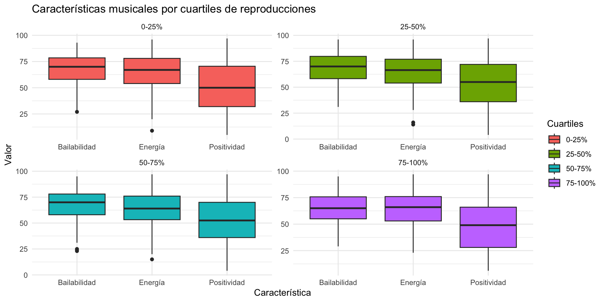
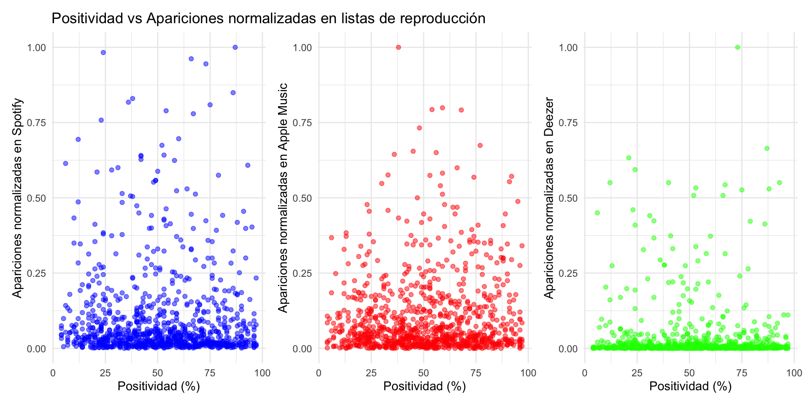

Hits Spotify 2023 y el caso de Feid
Manuel Gimeno (magilli@alumni.uv.es)
Cristina Tormos (tordela@alumni.uv.es)
20/12/23
Introducción
Nuestra presentación se divide en dos partes: primero, un análisis de las tendencias musicales de 2023 con datos de Spotify, destacando variables como “bailabilidad” y “energía”. Luego, nos enfocamos en el artista Feid, evaluando la popularidad y características musicales de sus canciones. El objetivo es comprender el comportamiento general y específico de las canciones, identificar coincidencias y descubrir tendencias en el panorama musical actual.
Primera parte: Comportamiento, coincidencias y tendencias de las canciones más populares de 2023.
Análisis global de canciones y número de reproducciones.
Objetivo: Analizar cómo se distribuyen las reproducciones entre las canciones populares.
Método: Utilización de un histograma transformado logarítmicamente para una representación clara y detallada de la distribución de las reproducciones.
Este histograma nos permite agrupar las canciones al dividir las reproducciones hasta en 60 veces. De esta manera, es posible apreciar con qué frecuencia aparecen canciones en el TOP 1000 que tengan un número determinado de reproducciones. A pesar de ser un base de datos caracterizada por la popularidad, dentro de esta exposición existen diferencias de reproducciones, como puede observarse con la forma de campana de Gauss que ofrece le histograma.
Popularidad de canciones por mes de lanzamiento
Investigamos también factores como el mes de lanzamiento de las canciones y su influencia en la popularidad. Mediante gráficos de barras analizamos qué meses en particular recogen la mayor cantidad de éxitos, pudiendo entrever estrategias de marketing y tendencias de consumo.
Objetivo: Investigar si el mes de lanzamiento influye en la popularidad de las canciones.
Método: Creación de un gráfico de barras para mostrar la cantidad de canciones populares lanzadas cada mes.
Con este gráfico de barras observamos que los meses de lanzamiento que aglutinan las canciones más populares son los meses de enero y mayo. Esta agrupación destacada evidencia una concentración de canciones alrededor de dos meses que, con toda seguridad, han sido seleccionados de manera previa por las discográficas para generar un impacto superior debido a eventos y tendencias concretas que se desarrollan en el sector musical.
Número de reproducciones por cantidad de artistas participantes
Objetivo: Explorar la relación entre el número de artistas en una canción y su éxito en términos de reproducciones.
Método: Uso de un gráfico de dispersión para visualizar esta relación, con una transformación logarítmica en el eje de las reproducciones.
Este gráfico de dispersión deja muy a las claras que los mayores éxitos en cuanto a cantidad de ellos mismos se produce con un solo artista como protagonista, siendo este un resultado esperado. Sin embargo, al mismo tiempo, también vemos que los temas musicales lanzados por una sola persona son los que mayor cantidad de reproducciones ofrecen. No existe un dato extremo o “outlier” que supere a los temas populares protagonizados por un artista en solitario.
Relación entre características musicales y rango de popularidad por cuartiles

Una parte significativa del estudio la dedicamos a explorar de qué forma características específicas de las canciones como la “bailabilidad”, la “energía” y la “positividad” se correlacionan con su éxito en términos de reproducciones. Al dividir las canciones en cuartiles según su número de reproducciones, es posible destacar utilizando gráficos de caja y comparar las distribuciones de estas características musicales dentro de cada cuartil. Este análisis detallado proporciona información sobre qué atributos musicales son más importantes en las canciones de mayor éxito.
Objetivo: Examinar la relación entre la popularidad de las canciones (medida en reproducciones) y sus características musicales (“bailabilidad”, “energía”, “positividad”).
Método: Clasificación de las canciones en cuartiles según sus reproducciones y posterior análisis de las características musicales para cada cuartil mediante gráficos de caja.
Los resultados de estos gráficos de cajas son sorprendentes. Curiosamente, el cuartil donde se aglutinan las canciones más popualres (es decir, el grupo de 75%-100%) es el que dispone el rango de “positividad” más bajo, tanto en su máximo como en su mínimo. Los valores de “bailabilidad” y “energía” también son sensiblemente inferiores. Esta situación puede deberse a las tendencias musicales actuales.
Análisis de la correlación entre características musicales y presencia en listas de reproducción

En este caso buscamos averiguar si las características musicales específicas —bailabilidad, energía y positividad— de las canciones se correlacionan con su presencia en listas de reproducción en distintas plataformas de streaming musical (Spotify, Apple Music y Deezer).
Objetivo: El análisis busca identificar si ciertas características musicales están más asociadas con una mayor inclusión en listas de reproducción en cada plataforma.
Método: Normalización de los datos para una correcta comparación y gráficas de dispersión para una mejor visualización.
Estos gráficos de dispersión no han arrojado una gran diferenciación entre el perfil de los usuarios que añaden canciones a sus playlist particulares. La mayor diferencia a simple vista es la de Deezer, pero esta situación puede deberse a que el funcionamiento de la plataforma no fomenta tanto la creación de playlist en comparación con Spotify y Apple Music.
Análisis de canciones por clusters
Por último, uno de los aspectos más importantes del trabajo ha sido poder agrupar las canciones más populares por clusters. Estos clusters tienen en cuenta las tres características cualitativas de las canciones para Spotify, como son la “bailabilidad”, la “energía” y la “positividad”. Esta clasificación sirve para encontrar canciones con elementos comunes y así poder concretar con mayor precisión qué elementos son necesarios para que un tema musical pueda llegar a ser extremadamente popular.
Objetivo: Agrupar canciones con características similares y analizar estos grupos.
Método: Uso del algoritmo k-means para clasificar las canciones en clusters según características musicales, así como visualización mediante un gráfico 3D.
Más que sacar conclusiones, este gráfico, usando el algoritmo kmeans, nos permite agrupar canciones por las variables “bailabilidad”, “energía” y “positivdad” y trazar así una relación entre todas ellas. Esta información por clusters puede ser muy útil como investigación de qué elementos debe tener una canción para ser de éxito y, al mismo tiempo, cómo debe ser en términos musicales si se quiere encuadrar dentro de un grupo determinado. Con herramientas de inteligencia artificial, esta información podría ser útil para crear canciones usando como modelos los temas de cada cluster.
Segunda parte: Ferxxo en el foco. Aproximación a un cantante de éxito
Biografia del artista
Salomón Villada Hoyos (Medellín, 19 de agosto de 1992), mejor conocido por su nombre artístico Feid o por su alter ego Ferxxo, es un cantante, compositor y productor discográfico colombiano.
Con una energía positiva, muy buen rollo y colaboraciones junto a varios artistas, Feid nos trae la banda sonora urbana del 2023.

Feid
Análisis de distribución de canciones por artista
Adentrándonos en el análisis de la distribución de canciones por artista, destacamos la proporción de canciones de Ferxxo en comparación con otros artistas entre las canciones más populares de 2023. Utilizamos un gráfico circular para ilustrar de forma clara y sencilla la diversidad artística.
Objetivo: Examinar cómo se distribuyen las canciones entre Feid y otros artistas.
Método: Uso de gráficos circulares para visualizar la proporción de canciones de Feid en comparación con otros artistas.
Con los gráficos circulares, podemos observar la significativa presencia de Ferxxo en el panorama musical de 2023. Esto nos sugiere que se encuentra entre las preferencias de los oyentes.
Éxitos en el TOP 10: Las 10 canciones más escuchadas de Ferxxo en 2023
| TOP 10 FEID | ||||||
| Canciones más escuchadas | ||||||
| 🔄 Reproducciones | 💃 Bailabilidad | 😃️Positividad | ⚡️ Energia | 🎸 Acustica | 🔊 Viveza | |
|---|---|---|---|---|---|---|
| Hey Mor - Ozuna, Feid | 674072710 | 90 | 40 | 59 | 0 | 10 |
| Feliz Cumpleaños Ferxxo - Feid | 601863821 | 87 | 57 | 55 | 10 | 29 |
| Yandel 150 - Yandel, Feid | 585695368 | 78 | 58 | 73 | 5 | 10 |
| LA INOCENTE - Feid, Mora | 477033549 | 76 | 46 | 79 | 31 | 7 |
| Normal - Feid | 459276435 | 71 | 59 | 56 | 4 | 27 |
| CHORRITO PA LAS ANIMAS - Feid | 345031710 | 74 | 61 | 83 | 11 | 35 |
| Classy 101 - Feid, Young Miko | 335222234 | 86 | 67 | 66 | 14 | 12 |
| ULTRA SOLO REMIX - De La Ghetto, Feid, Polima WestCoast, Paloma Mami, Pailita | 279717388 | 91 | 59 | 82 | 8 | 6 |
| Ferxxo 100 - Feid | 278920007 | 70 | 58 | 57 | 25 | 15 |
| Pantysito - Feid, Alejo, Robi | 273005485 | 83 | 63 | 74 | 14 | 16 |
A continuación, es posible descubrir los éxitos más destacados de Ferxxo mientras se filtran y se ordenan sus canciones según la cantidad de reproducciones. Esta tabla muestra las canciones más populares, abordando aspectos como reproducciones, bailabilidad, positividad, energía, acústica y viveza.
Objetivo: Identificar las canciones más populares de Feid.
Método: Ordenar las canciones de Feid por número de reproducciones y seleccionar las 10 principales.
Con esta tabla, hemos querido reflejar las 10 canciones mejor acogidas por los oyentes, además de mostrar las características individuales de cada canción.
Explorando en profundidad las características del TOP 10 de Ferxxo
En este apartado analizamos las canciones de Ferxxo mediante un gráfico de radar que resalta sus características distintivas. Este gráfico nos permiten apreciar la bailabilidad, positividad, energía, acústica y viveza presentes en sus canciones.
Objetivo: Analizar en detalle las características musicales de las canciones más populares de Feid.
Método: Creación de un gráfico de radar para visualizar las características como bailabilidad, positividad, energía, etc, asignando a cada canción un color.
Al profundizar en las características del TOP 10 de Ferxxo mediante el uso de un gráfico de radar, podemos obtener una visión detallada de sus peculiaridades. Esto también se puede observar en la tabla, pero aquí de manera más visual.
Viaje a través de las características individuales de nuestras canciones favoritas
Exploramos de otra forma las características individuales de las canciones de Feid a través de gráficos de dispersión. Cada gráfico se centra en una característica única, desde la bailabilidad hasta la viveza, proporcionando una visión detallada y personalizada de la esencia musical de Ferxxo.
Objetivo: Con la representación individual de cada canción de Feid se pretende obtener una evaluación detallada de los atributos de sus canciones.
Método: Se utiliza un gráfico de dispersión donde cada punto representa una canción.
Con esto buscamos otra manera de visualizar lo mismo, pero ahora de forma visual, detallada y personalizada.
Comparación de popularidad en Spotify y Apple Music
Examinamos la popularidad de las canciones de Feid en Spotify y Apple Music a través de un gráfico interactivo. Este análisis incluye la presencia en playlists de ambas plataformas, ofreciendo una visión personalizada de cómo las canciones de Ferxxo se posicionan en el mundo de la música en la era digital. Al contrario que en la primera parte del trabajo, se prescinde de Deezer para ver de forma más fácil la comparación.
Objetivo: Comparar la popularidad de las canciones de Feid en Spotify y Apple Music.
Método: Uso de gráficos de barras para visualizar la presencia en playlists de ambas plataformas.
La comparación de la popularidad en Spotify y Apple Music proporciona una visión valiosa de cómo las canciones de Ferxxo se posicionan en el ámbito digital. Al normalizar los datos, dado que cada plataforma difiere significativamente en el número de oyentes y la cantidad de playlists, podemos observar, por ejemplo, que “Yandel 150” destacó más en Spotify, mientras que “Normal” lo hizo en Apple Music.
Descubriendo colaboradores musicales en las canciones de Feid
En esta sección, nos sumergimos en la exploración visual de los colaboradores que han dejado su huella en las canciones de Ferxxo. A través de un intrigante Word Cloud, cada palabra representa a un artista colaborador, y en diferentes colores. Esta representación gráfica nos brinda una visión única y artística de las conexiones que Ferxxo ha cultivado en su viaje musical.
Objetivo: Investigar las colaboraciones musicales en las canciones de Feid.
Método: Creación de un Word Cloud para representar visualmente a los artistas colaboradores.
Con la visualización a través del Word Cloud, se puede apreciar que Feid ha colaborado con artistas como Young Miko, Ozuna, Yandel, entre otros.
Conclusión: De tendencias universales a las notas únicas de Feid
Hemos explorado, en primer lugar, la distribución global de reproducciones, las dinámicas estacionales, la influencia del éxito en las colaboraciones y, sobre todo, qué pueden decirnos características asignadas por Spotify a las canciones, tanto en su propio éxito medido en reproducciones, como su clasificación por similitud a través de clusters.
Posteriormente nos hemos sumergido en el universo sonoro distintivo de Ferxxo, desde sus éxitos envolventes hasta las colaboraciones tejidas en su trayectoria.Y como en nuestros datos no lo tenemos porque es muy reciente, compartimos por aquí una de las canciones que más esta sonando últimamente:
Slides hechas con Quarto